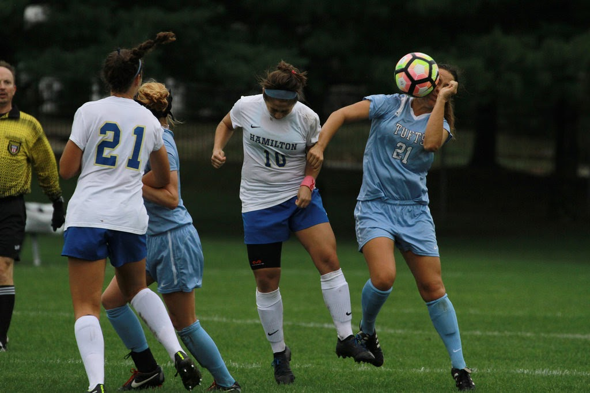

Emma Ranalli grew up in Powell, Ohio and attended Olentangy Local Schools. She spent most of her youth arguing with her brothers, directing her teammates on the soccer field, and reading any book she could get her hands on. Her academic and soccer interests led her to Tufts University where she is currently a senior studying Human Factors Engineering. While at college, she learned many things, but perhaps most importantly that not everyone finds planes, trains, and automobiles as cool as she does. This discovery led Emma to pursue her interest in transportation and Human Factors. This semester Emma is interning at the Volpe Center (USDOT), constructing crosswords for her Senior Capstone Project (among other school assignments), and continuing to direct on the soccer field. Go bos!
